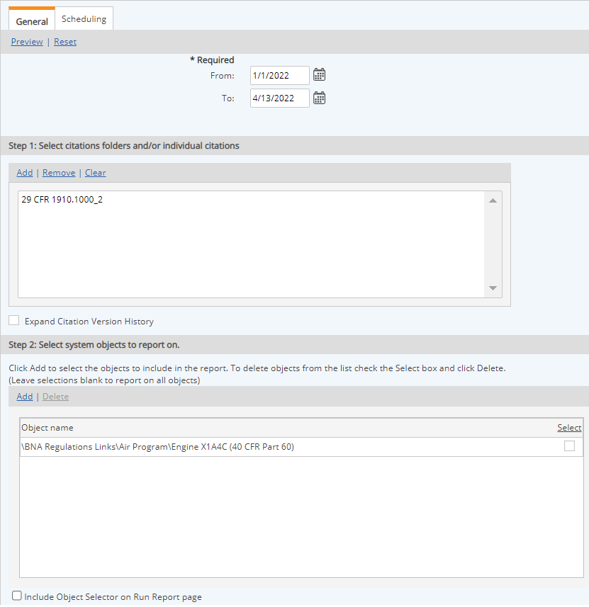
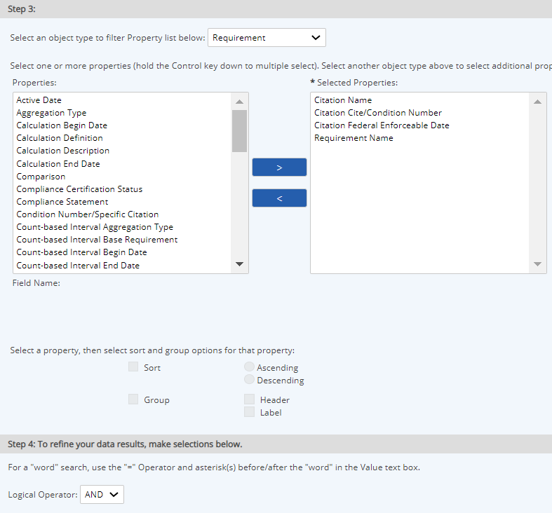

A Citation Report is used to report on Requirements and their related Citations. It allows you filter Requirements by Citation.
Task properties may also be included in a Citation Report. Data will then be shown for Tasks associated with Requirements that are associated with a Citation. Selecting a Task property for reporting will return one row per Task-Requirement association. (Tasks must be directly associated with the Requirement.)
Tasks associated with objects not associated directly with requirements will not be reported. For example, tasks associated directly with a Facility will not be indirectly associated with requirements under the Facility.
Task properties available for inclusion are Assignee, Assignor, Created On, Description, Name. Task instance properties are not be available.
To create or run a Citation report, users must have View permissions for the Citations included in the report.
To create a Citation report:
Select the objects whose requirements you want to include in the report.

Select the properties to include.
You can order the properties with the Up and Down buttons, and choose properties to sort on and sorting criteria. You can also filter by property values.
